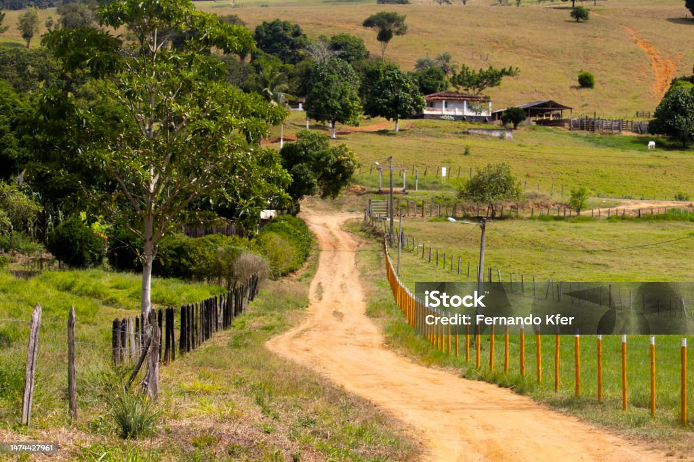

04. Público-Alvo
Atendemos comunidades rurais, escolas afastadas e equipes de defesa civil.
Também apoiamos agricultores e operações logísticas em áreas sem infraestrutura.
Todos precisam de dados claros para agir rápido e reduzir riscos locais.
Atendemos comunidades rurais, escolas afastadas e equipes de defesa civil.
Também apoiamos agricultores e operações logísticas em áreas sem infraestrutura.
Todos precisam de dados claros para agir rápido e reduzir riscos locais.
